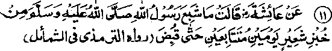
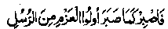

Chapter Six · Section (d): Ahadith on the foregoing subjects (concerning the excellence of Tawakkul)
Hadith 11

Aishah Radhiallaho anha narrates that Rasulullah Sallallaho alaihe wasallam did not ever take enough barely bread to satisfy his hunger on two consecutive days,till he passed away.
Note: Such was the life of Rasulullah Sallallaho alaihe wasallam! There are hundreds of Ahadith that give a similar account of his mode of life. Nowadays, we hear a lot about the poverty and starvation of the Muslim community but, one wonders, how few men there might have been who could not get enough plain bread to satisfy them on two consecutive days throughout their life' The ‘Shamaael-e-Tirmizi, quotes another Hadith on the authority of Aishah Radhiallaho anha to the effect that even the family of Rasulullah Sallallaho alaihe wasallam did not get enough barley bread to satisfy their hunger on two consecutive days till he passed away. ’
Ibne Abbas Radhiallaho anho says: "On many consecutive nights Rasulullah Sallallaho alaihe wasallam and his family had nothing to eat in the evening and they had to go without food for the whole night; and Rasulullah Sallallaho alaihe wasallam lived on barley' bread".
Someone asked Sahl Radhiallaho anho, "Was not Rasulullah Sallallaho alaihe wasallam accustomed to eat bread made from sifted flour? "He replied, "I am not sure whether Rasulullah Sallallaho alaihe wasallam ever saw sifted flour in his lifetime”. He then asked, “Didn’t you have sieves during the times of Rasulullah Sallallaho alaihe wasallam?'Sahl Radhiallaho anho replied that they were not accustomed to use sieves those days. At this, the person asked (in surprise), "How could you eat unsifted barley flour"? Sahl Radhi-allaho anho answered, "We used to shake and blow the flour; thus the (big particles (chaff) flew away and we baked the rest". (Shamaael-e-Tirmizi)
Note: Today, we find it hard to eat wheat bread made from unsifted flour. The Sahabah Radhiallaho anhum used to eat barley bread made from unsifted flour and, even of that, they could not get enough to eat their fill.
Aishah Radhiallaho anha says, "When I have a full meal, I cannot contain my sorrow and burst into tears". Someone asked her the reason and she said, I am reminded of the times of Rasulullah Sallallaho alaihe wasallam when he could never have a full meal of meat or bread twice a day till he passed away". (Shamaael) Sayeed Maqbari Rahmatullah alaihe says that once Abu Hurairah Radhiallaho anho came upon some people who had a dish of roast chicken in front of them and were having dinner. They invited him to share the food, but he refused to do so and said, "Rasulullah Sallallaho alaihe wasallam passed away from this world without ever having enough barley bread to satisfy his hunger. How can I eat chicken?" (Mishkaat).
Note: This is a general remark by Abu Hurairah Radhiallaho anho and not a legal prohibition. For, there are authentic Ahadith to prove that Rasulullah Sallallaho alaihe wasallam himself did eat chicken-meat.
Another Hadith says that Rasulullah Sallallaho alaihe wasallam often remained hungry, even without being driven to it by necessity. That is, sometimes he ate very little, despite there being sufficient food to eat. For, the Divine light (nur) descends bountifully upon the hearts of those who keep their bellies hungry. Still another Hadith says that Allah Ta'ala takes pride in him who eats and drinks little in this world, and He says to the angels, ‘Look! I tried him with want (of food and drink) and he remained patient Bear witness; for every morsel of food that he could not eat, I grant him a high grade in Jannah”(Ihyaa).
However, one should not of ones own choice, eat so little food as to leave him insufficient strength for the performance of religious duties. For the same reason, eating of ‘Suhur’ (a meal taken shortly before dawn) has been made a Sunnah for the month of Ramadhan, as it protects a person from growing too weak while fasting. And taking a short mid-day nap has been made a Sunnah, as it is helpful for staying awake by night and observing Tahajjud Salaat. Rasulullah Sallallaho alaihe wasallam once said, "No full vessel is as bad as a belly replete with food. (i.e. filling of no other vessel is as bad as filling one’s belly with food). But, since one cannot do without food, one third of the stomach may be filled with food; one third should be kept empty for water and one third for the air”.
It has been related in a Hadith that once Fatimah Radhiallaho anha brought a loaf of bread to Rasulullah Sallallaho alaihe wasallam who asked her what it was and she said,"O Rasulullah, I baked some bread today, but I did not like to eat it without your sharing it with me". Rasulullah Sallallaho alaihe wasallam said, "This is the first thing your father is putting into his mouth after three days". (That is to say, I have not taken any food for three days -together).
According to another Hadith, Rasulullah Sallallaho alaihe wasallam once said, “Only those who remain hungry in this world will be replete with food in the Akhirah and Allah Ta'ala greatly dislikes a person who eats so much that he suffers from indigestion;
and he who wishes to have something but does not eat, will be raised to higher stages in Jannah". Umar Radhiallaho anho says, "Avoid eating to repletion; for it causes heaviness in the world; and decay and putrefaction at the time of death”. Shaqiq Balkhi Rahmatullah alaihe says: "Devoutness is a profession, whose workshop is solitude, and whose instrument (with which a man of profession works) is hunger."
Fudhail Rahmatullah alaihe used to say, addressing himself, "Fudhail, you feel afraid of hunger, though it is not a thing to be afraid of. Insignificant man! Think of Rasulullah Sallallaho alaihe wasallam and the Sahabah Radhiallaho anhum who had to suffer from hunger" (despite their sublime spiritual ranks). He would say, sometimes,''O Allah! You kept me and my family without food, and without light during dark nights. I know it is Your way with the pious ones among Your men. What virtue of mine moved Your bounty to bestow upon me such a great favour?'(He wondered if any virtue of his was so pleasing to Allah Ta'ala that He had, in spite of the fact that he was not a pious man (in his own estimation), granted him the favours which fall to the lot of the pious ones alone).
Kahmas Rahmatullah alaihe used to say, 'O Allah! You kept me without food, and without clothes, and without light during dark nights (I am not worthy of these favours). What moved Your bounty to bestow upon me all these favours?" Fatah Musili Rahmatullah alaihe used to say, when he was afflicted with some painful disease or, was suffering from pangs of hunger. "O Allah! You tried me with the affliction of hunger and disease and these are the things with which You try Your pious men. What good deed should I perform to show my gratitude to You for all these favours?"
Once, Maalik-bin-Dinar Rahmatullah alaihe said to Muhammad Ibne Wasi Rahmatullah alaihe, "Blessed is the man who gets a little produce (from land etc) which affords him a bare sufficiency and makes him independent of begging from people". Muhammad bin Wasi Rahmatullah alaihe said, "Blessed is the man who remains hungry in the morning and goes without food in the evening and, still, is well pleased with Allah Ta‘ala."It occurs in the Torah to the effect that,'‘When you have a full meal, call to your mind the people who are hungry. Abu Sulaiman Rahmatullah alaihe says,"If I take a morsel less than what I usually have at night, I deem it to be more rewarding (for my soul) than a whole night of standing in devotions.’
He also says: ‘Hunger is a Divine Treasure available only to those who are the favourites of Allah Ta’ala.'’
Sahl bin Abdullah Tustari Rahmatullah alaihe was accustomed to going without food consecutively for more than twenty days and his expenses on food were estimated at one Dirham (silver coin) a year. He often gave exhortations and talked at length on the merits of remaining hungry, so much so that he would say, “No other virtue can compare with that of eating only as much as is barely necessary, for. in that alone consists the compliance with the Sunnah (Way) of Rasulullah Sallallaho alaihe wasallam in matters of food." He also says: “Wisdom and knowledge is gained through starving the belly: ignorance and sins are centred in repletion.” He also says: ‘No one can attain to the station of the ‘Abdaal’ (a very high rank of sainthood) until he cultivates the following habits: starving the belly, observing reticence in speech, waking up at night for devotions, love of solitude? He also says, ‘He who remains hungry is least disturbed by the whispering and evil promptings of the Shaitan”.
Abdul Wahid bin Zaid Rahmatullah alaihe would say: T swear Allah! Nobody’s soul can be purified unless he starves his belly; and it is by virtue of hunger that the saints used to walk on water and are granted the miraculous power to traverse thousands of miles in a few steps (the charismatic power called ‘Tayy-ul-ardh).
Imaam Ghazaali Rahmatullah alaihe says that there are ten great advantages of eating less food:
The first Advantage, (of eating less food) is that it helps to purify one’s soul produces alacrity of spirit and deepens one’s insight; for, repletion causes dullness of mind and makes one’s heart devoid of spiritual light (Noor). When the stomach is full, gases and vapours (rising from it) gather up round the brain and also affect the heart, with the result that one’s mind becomes cloudy and slow in thought If a young boy begins to eat too much, his memory grows weak and his brain becomes dull. Abu Sulaiman Darani Rahmatullah alaihe says: "Make a habit of keeping your stomach empty; for this subdues the evil nature, softens the heart and helps in acquiring spiritual knowledge". Shibli Rahmatullah alaihe says, “Whenever I remained hungry, meaning thereby to earn the pleasure of Allah Ta’ala, I found, opening up within myself a new vista of knowledge and a deeper insight into the reality of things was granted to me."
It also explains, Luqman Alaihissalam advised his son, thus: “Sonny, when a person’s belly is full, his faculty of reason becomes dormant, his wisdom becomes still and ineffective, and his limbs become slow in performance of acts of devotion". Abu Yazid Bustami Rahmatullah alaihe says, "Hunger is like a cloud; when one is hungry it sends down showers of wisdom upon one’s heart".
The second advantage is that hunger softens a man’s heart and makes it sensitive to ‘Zikr’ (Remembrance of Allah Ta'ala) and other acts of devotion. Sometimes a person recites the hymns with great concentration of mind, but his heart does not experience the bliss and other effects of Zikr. But when the heart becomes sensitive to softer feelings, it can experience the rapture of ’Zikr’ the joy and bliss of importuning His. favours. Abu Sulaiman Darani Rahmatullah alaihe says; “I derive greatest pleasure from my devotions when I am starving, with my belly totally empty”. Junaid Baghdadi Rahmatullah alaihe used to say, “How can a person who hangs a bag of food between his heart and his Lord (Allah Ta'ala) experience the bliss of solitary communion with Him. (filled belly is compared to the beggar’s bag, full of food)."
The third advantage of hunger is that it produces meekness and humility in a man, and sublimates his pride and vanity that would induce him to become heedless and transgress the Commandments of Allah Ta'ala. Nothing mortifies the baser self of man more than hunger. And, no one can have a vision of the Grandeur and Majesty of Allah Ta'ala unless he humbles himself, feeling insignificant in comparison with Allah. Therefore, everybody should make a habit of remaining hungry often, so that he can concentrate his thoughts on his Lord, intuitively. It was in view of this effect of hunger that, when Allah Ta'ala offered to Rasulullah Sallallaho alaihe wasallam that the entire land of Makkah be turned into gold for him, he replied, "No, but I would like, O Allah! to be hungry and have enough to eat on alternate days; so that when I am hungry, I shall be patient and bow to You in humility (supplicate Your favours), and when I have enough food, I shall be thankful to You".
The fourth advantage of being hungry is that one is never forgetful of those who are suffering from misery and starvation. A person replete with food can have no idea of the sufferings of the starving and the needy. Someone asked Yousuf Alaihissalam, "You are the custodian of all the treasures of this land and still, you remain hungry". He replied, "I fear lest repletion should make me forgetful of those who are starving”. And, hunger and thirst in this world also helps to keep in remembrance the hunger and thirst that, men will be made to suffer on the Day of Resurrection. A hungry man fears the punishment of Allah Ta'ala; he can call to mind how the inmates of Jahannam will suffer from severe thirst and hunger, how they will be given food that will be hard to swallow, and how they will be given as drink, the blood and the pus running from the wounds of those burning in Fire.
The fifth and most important advantage of hunger is its effect of protection against sins. For, all lusts stem from repletion, while hunger takes the edge off one’s passions. A person’s blessedness consists in his subduing his evil self, while his misfortune comes from being over powered by evil passions. As a wild horse is made docile through hunger, and becomes defiant and rebellious if it is given too much to eat, similarly, the evil nature of man can be subdued only by starving the belly.
Someone asked a Divine, "You are old and weak in body and, still, you do not take care of your health (you need to take invigorating foods). He replied, "Man’s innate evil nature is quickly excited by passions; I fear, lest it should drag me into the bane of some sinful deed. So, I prefer to keep my nature subdued by mortifications, lest it should tempt me into a sin leading to damnation".
Aishah Radhiallaho anha says, "The first innovation (Bid’at) in Deen that started after the times of Rasulullah Sallallaho alaihe wasallam is the habit of people to eat to the extent of repletion. When the bellies of men are full, their psyches are inclined towards the world".
And this advantage of hunger being a protection against sins includes so many other advantages, the least of which is one’s protection against lusts of the sex and the desire for idle talk. A hungry man would never like to indulge in idle talk and, thus, he would be safe from the sins of back-biting, telling lies, obscene talk, maligning and vilifying others. On the other hand, a full-bellied glutton desires recreation and chit-chat........and our gossip generally consists of slanders about the chaste and virtuous people. Rasulullah Sallallaho alaihe wasallam said, "(Mostly) people are condemned to Jahannam for the harvests of their tongue". There is no denying the fact that indulgence in sex is most fatal for the soul. Now, when a person’s belly is full, he finds it difficult to contain his sexual desire; and even if he is capable of restraining it, through fear of Allah Ta'ala, he may not be able to avoid the sin of lustful gazing (at the person of opposite sex). Rasulullah Sallallaho alaihe wasallam once said, "The eye commits fornication, as do the private parts". Suppose a man is able to close his eyes to avoid sinful gazing, the image of the persons op whom he chanced to cast a glance will still haunt his mind, and lustful thoughts will deprive him of the bliss of Communion with Allah Ta'ala, and may even distract his attention when engaged in observance of Salaat. Sins of lust and sins of the tongue have been mentioned by way of illustration; as a matter of fact, all sins committed by various parts of the body have their origin in a belly replete with food, which provides the necessary strength.
The sixth advantage of eating less food is that those who eat sparingly do not sleep long, but are granted the privilege to stay awake at night and engage themselves in devotions. He who eats much needs to drink plenty of water and so remains asleep for long hours. The divines say, "Do not eat much food, or you will have to drink plenty of water, then you will fall asleep and go on sleeping for long hours, which will cause you great spiritual loss." They say that seventy famous physicians are agreed upon the fact that drinking a lot of water cause a person to sleep for longer durations,and so a greater portion of his lifetime is wasted, not to speak of the spiritual loss of missing Tahajjud Salaat. Too much sleep also causes hardheartedness and dullness of the mind. Moreover, if a man leading a celibate life or living away from his wife, sleeps for long hours, he will frequently be subject to night pollution and, in case there are no proper arrangements for taking a bath, he will often miss his Tahajjud prayers.
The seventh advantage of eating less food is that it facilitates standing in devotion for long hours: a heavy stomach makes a person lazy and incapacitates him from standing in devotions. The very act of eating takes a lot of time; and, if a person has to cook for himself, it involves a greater wastage of time. Then, after taking the meal, you wash your hands, pick your teeth (to remove crumbs from the teeth), get up from your seat time and again and go out to take water. If you add up the time spent on these various acts, you will realise how much time is wasted in taking food. How much more beneficial would it be if all this time were spent in remembrance of Allah Ta'ala and other acts of devotion?
Sirri Saqati Rahmatullah alaihe says that he saw Ali Jutjani Rahmatullah alaihe eating a sort of mash made from barley flour and asked him how he had got used to that food! The Sheikh replied, "I calculated the time spent in eating a morsel from putting it in the mouth upto chewing, and swallowing it, and I saw that during this time, I could say: () (Allah be glorified) seventy times. For this reason, I have not taken bread for the last forty years but have been eating this mushed barley flour alone". The fact is that every second of a man’s life is an invaluable jewel, which must be deposited with Allah Ta'ala in the treasury of Akhirah so that it may not be wasted. And the only way of preserving it, is to spend it in the remembrance of Allah Ta'ala or in other acts of devotion.
Besides, a full belly is a hindrance which prevents a man from remaining in the state of ritual purification (Wudhu) for long duration. He has to go to the privy and cleanse himself more often (perform Istinjaa) and, besides wasting his time, he cannot stay in the Masjid (continuously) for longer hours. Moreover, fasting becomes much easier for those who are used to remain hungry. In short, there are innumerable advantages of eating less food, for example, its helpfulness for fasting, for observing I’tikaaf (seclusion), for staying -in the state of ritual purification (wudhu) for longer hours, for spending more time in acts of devotion. But all these advantages cannot be appreciated by the worldly-minded, who are heedless, who regard ‘Deen’ to be of little value, who are content with the transitory life of the world, knowing only about this world, with little knowledge of the Akhirah.
The eighth advantage of eating less food is that it is good for bodily health. Most diseases are caused by repletion and surfeit, for, eating too much causes such deposits to accumulate in the belly, and qn the veins and arteries, which are harmful for the health of the body and which breed various diseases. Ailments and diseases, besides being injurious to health, prevent a person from exerting himself in devotions, distract him and divert his attention from contemplation and remembrance of Allah Ta'ala. Moreover, diseases bring in their wake a host of worldly encumbrances and worries, including medicines, precautions,visits to doctors and physicians, to undergo operations, or (as in olden times) getting a leech to suck one’s blood, thus causing great botheration and a lot of expenses, whereas hunger serves as a sure protection against all maladies. They relate that once Haroon Rashid, the Caliph, invited to his court four expert physicians from India, Constantinople, Iraq and Sawad.... and asked them to name a medicine which did no harm to any organ of the body. The Indian said it was the black emblic (myrobalan), the Iraqi named the wild rue (called ‘Habb-ur-Rashad’ in Arabic, ‘Sipand’ in Persian and ‘Haloon’ in Hindi) and the Roman suggested it was hot water which was totally harmless. The expert from Sawad said,'That is all wrong. Emblic is harmful for the stomach. (It is also harmful for the liver-Author). The wild rue is sticky and also harms the stomach, and hot water causes looseness of bowels.'At this, all of them asked him to name something which was perfectly harmless and he replied,"If you want to keep out of harm’s way, you should not take anything until you have a good appetite and stop eating while you still feel like having some more". All the three doctors agreed with his opinion.
It is said that a philosopher doctor was told about a Hadith of Rasulullah Sallallaho alaihe wasallam, which says that one should fill one third of one’s stomach with food, keep one third of it for water and one third empty for the air. He was greatly surprised and said, I do not know of a sounder and saner view about eating less food. These are, undoubtedly, the words of a great sage”.
The ninth advantage of eating less food is the economy in expenses. A person who eats less food spends less money than the one who eats more. The latter, in order to provide himself with larger quantities of food sometimes adopts unlawful means or suffers humiliation through begging from people. (We have just given an account of Sahl Tustari Rahmatullah alaihe whose expenses on food amounted to one silver-piece a year).
A sage has said, T often dispose off my wants merely by abandoning the idea of fulfilling them, which gives me peace and safety from distraction in devotion." Another sage says, "When I feel the need to borrow money, I borrow it from myself saying (to my own-self) that I undertake to fulfil this desire at another time". Whenever Ibrahim Ain Adhem Rahmatullah alaihe asked the price of something and was told that it was very expensive, he would say to his friends, “Do not buy that thing, as that will make it cheap”, (i.e. if you decide not to buy a thing, it is all one to you whether it is cheap or expensive and you do not bother as to how it is selling) In most cases, it is greed that brings about man’s damnation; and greed results from excessive indulgence in enjoyments of food and sex. Sexual desire is also an outcome of eating rich food. And in eating less food, there is protection against all these evils; may Allah Ta'ala grant protection to whomsoever He wills. The tenth advantage of eating less food is that it enables a person to offer help in sympathy with others and to give away large amounts in Sadaqah. For, a person who saves on food can spend his savings as Sadaqah on the orphans, the poor and the destitute. This Sadaqah will provide him Shade on the Day of Resurrection, as stated earlier in a Hadith.
The excessive amount of food a person consumes turns into waste, while whatever is spent as Sadaqah is deposited in the Treasury of Allah Ta'ala for his eternal benefit. We have already quoted a Hadith in the foregoing pages to the effect that once Rasulullah Sallallaho alaihe wasallam said, "Man says, ‘My wealth, my wealth", though what is really his, consists of three things: what he gives as Sadaqah and preserves for use in Akhirah, what he eats and uses up, and what he wears and makes wornout. All the rest is not his property, but is left behind for his heirs and he has no share in it". Besides, we have already quoted numerous Ahadith on the virtues of Sadaqaat. Each one of the ten advantages of eating less food, described above in brief, includes numerous other advantages.
One point, however, is worth considering, to which we have made frequent references in this book. Of course that there is no doubt about the virtues of taking less food, and, the fortunate ones are those who have, as a special favour from Allah Ta'ala, achieved this merit and enjoy perfect peace in their worldly and religious life; besides, these virtues will also help them to attain numerous benefits in the Akhirah. Still, every one should make allowance for his own weak body, lest, in trying to achieve too much, he may lose what he may have-already achieved. So, a person should keep persuading himself to achieve these merits and consider them of high value but, at the same time, he should observe only such practices as his own humble powers permit. A patient who carries heavy loads hastens his own death. We have diseases of the soul and our limbs and faculties are quite weak. Therefore, though we should continually aspire for perfect spiritual health and do our utmost to gain it, we should not do anything which might cause further deterioration in our spiritual health.
Imaam Ghazaali Rahmatullah alaihe writes: "One should cultivate the habit of eating less food gradually. For, if a person accustomed to eat a lot abruptly reduces his food, he will find it hard to bear and will lose his health. So, one should cultivate this habit gradually and conveniently. For example, if a person is accustomed to eat two loaves of bread everyday, he should reduce his food by twenty eighth part of a loaf everyday, so that, after a month, his daily provision of food will be reduced to one half of the amount being consumed by him previously. And, if even this reduction is too much for him, he may reduce a fortieth part of a loaf everyday.
Sahl Tustari Rahmatullah alaihe was asked, ‘How did you start your austerities in matters of food?” He replied, ‘In the beginning, I used to spend three silver-pieces (Dirhams) on food every year. I bought a syrup made from dates or grapes for one Dirham rice-flour for one Dirham and butter (or oil) for one Dirham. I made a thick mixture of these three and prepared three hundred and sixty sweet balls of dough. I fasted during the day and ate one such ball in the evening when the fast was broken". Some one asked him, “What is your practice now?" He replied,"There is no set routine; I just take something, at times’. We have earlier referred to his habit of going without food for twenty days at a time.
Abu Zan Ghifari Radhiallaho anho is reported to have said: "During the times of Rasulullah Sallallaho alaihe wasallam. I used to consume one Saa‘ (approximately 3-1/4 Kg) of barley every week. By Allah! I shall never increase it till I die. For I heard Rasulullah Sallallaho alaihe wasallam saying, ‘Of you, the dearest and the nearest to me on the Day of Resurrection will be the one who remains, till death, in the same condition as he is today.’ It was in view of this remark of Rasulullah Sallallaho alaihe wasallam that Abu Zarr Ghifaari Radhiallaho anho used to criticise some Sahabah to whom he would say, “You have abandoned the ways of life followed during the days of Rasulullah. You eat sifted barley flour, though it was not sifted during those times; you eat thin loaves of bread and I see many kinds of curries in your feasts, though you were not accustomed to such things during the times of Rasulullah Sallallaho alaihe wasallam”.
Hasan Basri Rahmatullah alaihe says: “A Mo’min (believer) is like a small goat; a handful of dates, a handful of barley flour with a little water suffices him for food. A hypocrite is like a wild animal, who devours everything he can come by; he has little regard for his neighbours nor does he prefer anyone else’s needs to his own. Give away, (O, Believers) whatever exceeds your needs as Sadaqah and send it before you to the Akhirah, (for it will benefit you)’. Abu Bakr Radhiallaho anho would go without food, consecutively for six days and Abdullah bin Zubair Radhiallaho anho could go without food consecutively for seven days. It is said that once a Sufi Sheikh came across a Christian monk and held conversation with him. In the course of their talk, he also invited him to embrace Islam. The monk said,"Eisaa Alaihissalam would sometimes go without food consecutively for forty days; it is obviously a miracle and only a Nabi is granted such powers". The Sheikh said, “Do you promise to embrace Islam if I go without food consecutively for fifty days’. The monk said, ‘Certainly’. The Sheikh stayed with him for fifty days and did not take anything. He then said'These fifty days were in fulfilment of my promise; now, I shall do it for another ten days”. So, he did not eat anything for ten days more and took food after sixty days of starvation. The monk was greatly surprised and embraced Islam.
A Hadith says that: 'If Rasulullah Sallallaho alaihe wasallam took a meal in the morning, he would not have food in the evening. And, if he took a meal in the evening, he would not take food in the morning.’ (Jami-us-Saghir). (That is it was his custom on some occasions.) The saints of earlier times also used to take food only once during the day. Imaam Raazi Rahmatullah alaihe says, If anyone is accustomed to taking food once during the day, be should eat it before dawn so that he may earn the blessings of fasting during the day, and be better able to engage in devotions during the night when his stomach is empty. They say that Maalik bin Dinar Rahmatullah alaihe desired to have milk, but he restrained his desire and did not take milk for forty years. Once some one presented to him some fresh dates, but he gave them to his friends saying,‘Have these dates, for I have not tasted one, for, the last forty years’ (Ihya)
Imaam Ghazaali Rahmatullah alaihe has narrated many such incidents about the self-denials of the great Divines. In fact, it was by virtue of these hardships that they were sometimes blessed by Allah Ta'ala with supernatural powers. Nowadays everybody aspires to possess them, but few can endure such rigorous self-mortification. How can we, who are accustomed to enjoy delicacies of food, think of such self-denials and hardships! It is said that a Sufi Sheikh invited a friend to a feast and put some loaves of bread before him on the table cloth. The guest began to turn over the loaves to select for himself a fine piece. The Sheikh said, “What are you doing? The loaf that you have rejected has such and such benefits in it; besides, so many workers toiled and laboured at it to make it reach here. The wind blew, caused the clouds to be filled with water, then it rained, the earth grew crops, men and animals worked in the fields, etc., to bring this bread and then it reached you. And, now you are selecting some loaves and rejecting others as bad ones".
It is said that a loaf of bread does not reach a person until three hundred and sixty hands have worked at it First of all, Mikaaeel Alaihissalam measures out a set quantity from the bounteous Treasures of Allah Ta‘ala, then the angels in charge of the clouds drive them to the fields; then the moon, the sun and the sky cause the crops to grow; then the angels in charge of the fields; and finally, the bakers work to prepare bread. Says Allah Ta'ala, winds cause the clouds to move; them the animals work in cloud and with absolute truth:
‘And if you consider a bounty of Allah and its details, you cannot reckon it. ’ (Ibrahim: 34)
Another noteworthy point about eating less food is that it should be done with the purest of motives, only to earn the pleasure of Allah, and not for show or winning worldly recognition, otherwise a person suffers from pangs of hunger but his soul becomes more corrupt, instead of being reformed. The Divines say that the one who abandons the joys of food, but falls a prey to the desire for show and recognition, is like a person who escapes from the scorpion but runs into the dragon’s mouth.
In short, eating less food is commendable, as it is beneficial both for one’s religious and worldly life, but one should take care lest it makes him too weak and guard oneself against other fatal dangers like hypocrisy etc. And, it is imperative to keep in view the way of living of Rasulullah Sallallaho alaihe wasallam, his social behaviour, his poverty and his voluntary starvation. One should have sincere preference for the life led by Rasulullah Sallallaho alaihe wasallam believing a life of austerity not because he was obliged to live in poverty, but by his choice, made with ‘his own sweet will and pleasure. A Hadith says that once Aishah Radhiallaho anha said to Rasulullah Sallallaho alaihe wasallam, ‘O Rasulullah, why you do not ask Allah Ta'ala to increase your sustenance and she burst into tears because she could not bear to see Rasulullah in pangs of hunger.’ At this, Rasulullah said, ‘Aishah, I swear by Him Who holds my life in His Hands, if I so wished, Allah Ta'ala would grant me mountains of gold which would go with me wheresoever I went. But I have preferred hunger in this world, I have preferred poverty in this world to riches and I have preferred sorrows of this world to joys. Aishah, this world is not suited for Muhammad and his family. Allah Ta'ala has commanded perseverance and patience to the most resolute and determined among His Ambiya, amidst sufferings of this world, and ordered them to keep away from the ease and comforts of this life. And Allah Ta'ala wants me to observe patience like them. He has said in one Ayat:

Have patience, then, even as the resolute of heart among the Rasuls; had patience’. (Ahqaf: 35)
And I cannot but obey the commandments of my Lord. So, by Allah, I shall observe patience to the extent of my powers, as they did, and truly it is Allah Ta'ala alone Who grants the power".
It has been stated that during the caliphate of Umar Radhiallaho anho, when so many territories were conquered by the Muslims, his daughter, Hafsah Radhiallaho anha, once suggested to him, that, when he received envoys from foreign countries, he should wear fine clothes and entertain them with good food and share it with them on the Maaidah. Umar Radhiallaho anho replied: "Hafsah, you know that the members of a person’s family know more about his private life than anybody else. She said, ‘certainly’. He said, "I put you on oath to confirm that during his Nabuwwat, Rasulullah Sallallaho alaihe wasallam and his family used to starve by day, if they had food the previous night, and that they would not eat anything at night if they had taken food during the day. Tell me, whether you do not know that Rasulullah Sallallaho alaihe wasallam lived for so many years after being granted Risalat by Allah, but he and his family did not have a full meal of dates till the conquest of Khyber. I put you on oath to confirm that once you laid his food on a sort of table raised above the ground, and when he saw it, his blessed face showed marked disapproval until it had been laid on the ground. I put you on oath to tell me whether you remember how Rasulullah Sallallaho alaihe wasallam used to fold his ‘Abaa’ (cloak-like woolen wrap) and sleep on it during the night; how one night you folded it twice (to make four layers) for him and how, the following day, he told you to fold it once only, saying that its four layers had well-nigh prevented him from getting up for Tahajjud prayers. The four layers of the wrap made it softer and comfortable enough for sound sleep. I put you on oath to tell me whether you do not know that Rasulullah Sallallaho alaihe wasallam used to take off his clothes and wash them himself; and that if Bilal Radhiallaho anho came to call him for Salaat when he was washing clothes, he would have no other clothes to wear and that he would go to the Masjid and lead the Salaat only after the clothes were dry enough to wear. I put you on oath to tell me whether you do not know that once a lady from the Banu Zafar (a tribe) prepared two pieces of cloth for Rasulullah Sallallaho alaihe wasallam and sent one piece before the other was ready; and that he wrapped it round his entire body, binding it in two knots round his neck (so that it should not slip), and went-to the Masjid to offer Salaat, wearing only one piece of doth because he had no other clothes to wear on that day."
Thus, Umar Radhiallaho anho went on to recount incidents from the life of Rasulullah Sallallaho alaihe wasallam, till she burst into tears and he also cried so bitterly that it was feared; lest he would die of anguish.
Another narration has it that once Umar Radhiallaho anho said: I had two companions, (Rasulullah Sallallaho alaihe wasallam and Abu Bakar Radhiallaho anho) who followed one and the same path. If I deviate from the path followed by them and follow any other course, I shall not be treated (by Allah) as they were. By Allah, I shall bind myself to lead a hard life as they did in this world, so that I may attain to the pleasant life being enjoyed by them in the Akhirah."
It occurs in ‘Fatawaa Alamgiriyyah’ (edicts of the Emperor Aurangzeb Alamgir) that there are several grades of taking food: The first is eating as much food as is essential for life. This is ‘Fardh’
(obligately). If a person abstains from food altogether or eats less than necessary to sustain life, he will be regarded a sinner. The second grade is taking as much as can afford sufficient strength for observing Salaat while standing, or for fasting without much trouble. Eating this much food is commendable, and one earns blessings from Allah Ta'ala. The third grade is that of admissibility i.e. eating more than the commendable amount, specified above, to the extent of filling the belly for the strength of the body, which is neither a sin nor a virtue to be rewarded by Allah Ta‘ala, though such a person will have to go through some reckoning, provided that he procures his food through lawful (Halaal) means. The fourth degree is that of overeating, which is Haram (unlawful) for everybody, except for two persons: the one who eats much to gain strength for fasting during the day, and the one who is taking food with a guest and goes on eating to allow the guest to have his fill.
It is not permissible to eat so little that one grows too weak to perform one’s obligatory (Fardh) duties. And, if it is not so, then there is no harm in eating less; for it reforms one’s soul and a person relishes his food more if he takes it only when he is feeling very hungry. Similarly, it is allowable for a young man to eat less food more for controlling his sexual desires. (Alamgiriyya). The author of ‘Durre Mukhtar’and some other scholars have modified this gradation, to the extent that it is obligatory (Fardh) to take as much food as affords sufficient strength to observe Salaat while standing. The last paragraph of the extract from the book ‘Alamgiriyyah (quoted above) also supports this view.